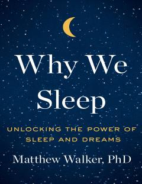

WWUyquning inson hayoti va salomatligidagi ulkan ahamiyati haqidagi ilmiy asar.
Ushbu kitob inson hayotida uyquning ahamiyati, uning miya va tana faoliyatiga ta'siri haqida ilmiy ma'lumotlar beradi. Uyqu yetishmasligining salbiy oqibatlari va sog'lom uyqu sirlari atroflicha muhokama qilinadi.